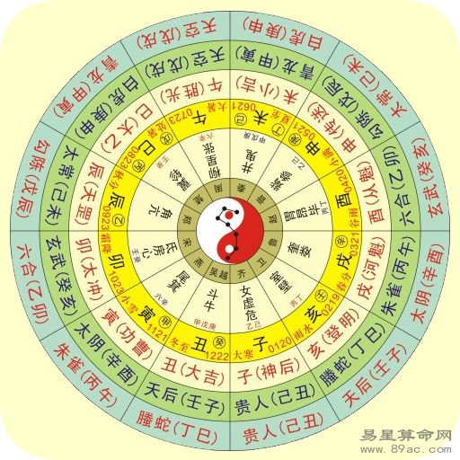
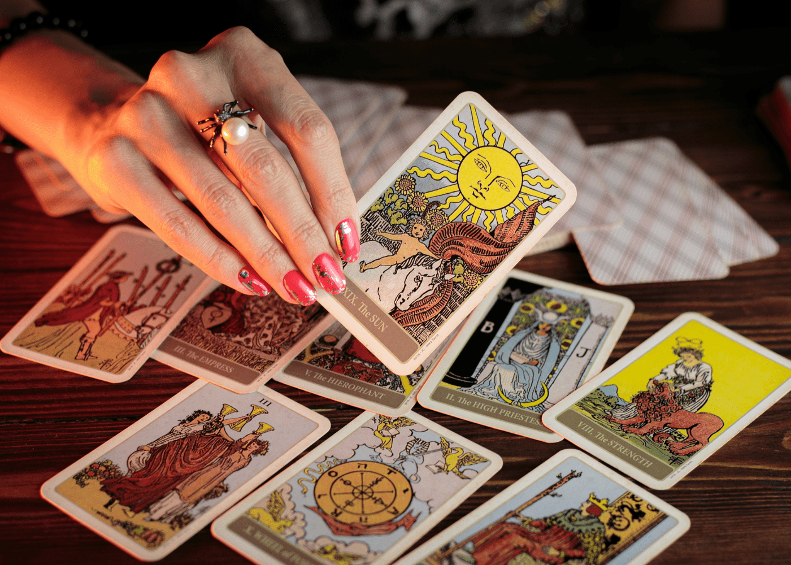
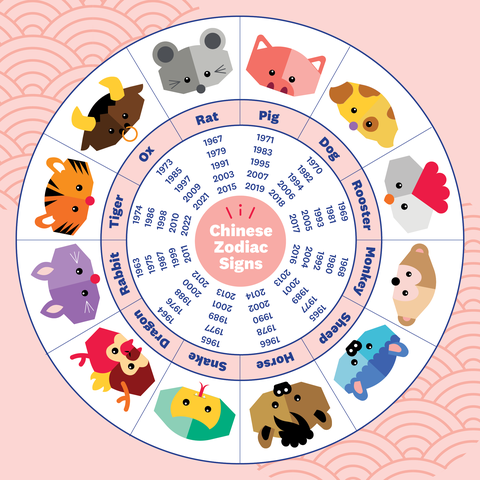

My Hobby
There are always people finding ways, consolidating experiences to give us the most "reliable" predictions of our future.
It is enjoyable trying out different test to know more about oneself at a lower cost than from professionals.
I am sure most people are curious to know more about our current and future self.
Here are some examples of tests:
| Chinese Bazi 八字 |
Tarot |
16 Personalities |
Zodiac sign |
|  |
 |
 |
 |
Let me share some interesting ones I found!
Test 1:Take a trip to the forest and answer 16 questions before scrolling to the reveal part!
Test 2:Take a look at the picture. Remember the first thing you see!
Test 3:Take a look at the picture. Choose the option that you like best.
Have fun! The options are on the left!
Photos from:
易星算命网. (2019, September 5). 最好的八字格局究竟是怎样的_易星算命网. 易星网. https://www.3169.net/a/suanming/rglm/2019/0905/5810.html
Gunasellan, V. (2021, November 11). Are tarot cards a tool for trickery or self-discovery? I seek the truth with the help of a tarot reader in Singapore. Honeycombers Singapore. https://thehoneycombers.com/singapore/tarot-reading-singapore/
zeman-j4. (2021, July 6). 16 Personalities. DX Heroes. https://developerexperience.io/practices/16personalities
Geller, L., & Miller, K. (2022, January 20). Your Chinese Zodiac Sign Is Dependent On So Much More Than Your Birth Year. Women’s Health. https://www.womenshealthmag.com/life/a19996137/what-is-my-chinese-zodiac-sign/
联合国. (2021, March 24). 森林恢复为大流行后的复苏和更绿色的未来提供了路径. 联合国新闻. https://news.un.org/zh/story/2021/03/1080652
American Center. (n.d.). Look for? Look after? Look at? Look below! Retrieved April 13, 2022, from https://www.americancenter.fr/details-look+for+look+after+look+at+look+below-144.html
Just for fun!